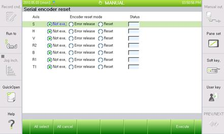

Previous error code: E0224 (○ axis) Abnormal encoder state
1.1.40.1. Outline
While the servo board receives the encoder data periodically through serial communication with the encoder to carry out the servo control of the motor, this error occurs when the data received from the encoder is normal, but for the encoder data, the result of the monitoring of the inside of the encoder itself is in an erroneous state (CE).
Counter error (CE): Occurs when deviation in position occurs in the data of the first rotation due to a malfunction or fault when the encoder main power is turned on
1.1.40.2. Causes and examine methods
|
(1) Please check the supply voltage to the encoder.
(2) Turn off/on the main power after deactivating the error..
(3) If the error keeps occurring, replace the motor (encoder) and then test it.
|
(1) Please check the supply voltage to the Encoder.
Power supply voltage to the encoder must be in a range of 5V±5% (4.75V ~ 5.25V) - (encoder side connector’s supply voltage). If the voltage is reduced below 4.75V, encoder may not operate normally and it will cause this error.
Please measure the voltage of encoder side’s connector-pin (3-4).
If the measured voltage is lower than the reference voltage, it is required to turn '+5V ADJ(E) voltage adjustment terminal of the encoder power supply to ensure that the connector voltage at the encoder side can be adjusted within the reference voltage.

(2) Turn off/on the main power after deactivating the error. .
If the error keeps occurring even when turning off/on the main power after deactivating the error, replace the motor (encoder) and then test it.
Deactivate the error in the following menu.
Ø System
Ø 5. Initialize
Ø 4. Serial encoder reset

(3) If the error keeps occurring, replace the motor (encoder) and then test it
If the error does not persist after the replacement of Servo Motor, Servo Motor is faulty. Please replace the Servo Motor with new one. Below diagram describes the locations of each axis’s motor (HS165 Robot). For other Robot, please refer to the Robot’s maintenance manual to replace it.

Figure 1.150 locations of each axis’s motor (HS165 Robot).